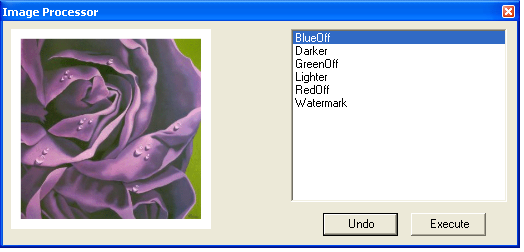
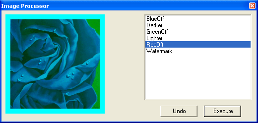

This tutorial will demonstrate how to create a simple "image editor" application (Image Processor), which uses collection of C# script files for image manipulations. "Type sharing" pattern in this tutorial is implemented with passing custom type between the script host and the actual script.
It is highly advisable to read the "Passing custom type..." section before starting this tutorial.
This tutorial as an example of balanced approach for implementing the script host application. This approach is based on the general script hosting concept described in the "Script hosting guideline" section.
Only the code, which logically belongs to the script hosting implementation will be discussed here. To accomplish this tutorial you will need to download ImageProcessor.zip file. Then extract the content of the zip file in the convenient location.
The host application for this tutorial comes in two flavors: C# script (imageprocessor.cs) and Visual Studio 2003 (VS7.1) project (content of extracted folder imageprocessor ). All code snippets in this tutorial are taken from the imageprocessor.cs script however they are applicable to the VS7.1 project to the same degree.
This tutorial demonstrates how to:
Firstly let's see the Image Processor action:
The script will create and show the following dialog.

The right panel (script panel) contains names of the C# script files
from the ImageProcessor/Scripts folder. These files contain some image
manipulation routine. If you double-click on the item in a script list
the corresponding script will be executed. Script execution means
passing the image (left panel) to the script and
retrieving it back with some modifications. This is the result of
execution the "RedOff" script (it removes the red color component from
every pixel in the image):

Application design considerations
The following are the rules that affect application design:
This is an example of a very simple class that implements rendering of watermark (Watermark.cs):
| using System.Drawing; using System.Drawing.Imaging; using System.Drawing.Drawing2D; using System; public class ImageEditorScript { public Image Modify(Image image) { Bitmap newBitmap = new Bitmap(image.Width, image.Height, PixelFormat.Format32bppArgb); using (Graphics g = Graphics.FromImage(newBitmap)) { g.DrawImage(image, 0.0f, 0.0f); //draw original image g.DrawString( "Watermark", new Font("Arial", 30), new SolidBrush(Color.FromArgb(90, 255, 255, 255)), 20, 20); } return newBitmap; } } |
The host application contains class Script which manages compiling and loading the script file. It loads the script file by using CSScript.LoadCode() method.
| CSScript.Load(file, null, true); |
Class Script has the method Modify, which "borrows" the implementation from the associated script file. This is how it is used in the
host:
| public Image Modify(Image image) { var Modify = new CSScript.Load(file, null, true) .GetStaticMethod("*.Modify", image); //or just GetStaticMethod() return (Image)Modify(image); } |
Note that it is possible to cache compiled script in this class (Script) however CSScript can do it for you. Regardless how many times you call CSScript.Load() it compiles script only if it was changed since the last execution.
CS-Script tutorials | "Type sharing" pattern | Passing custom type... | Script hosting guideline